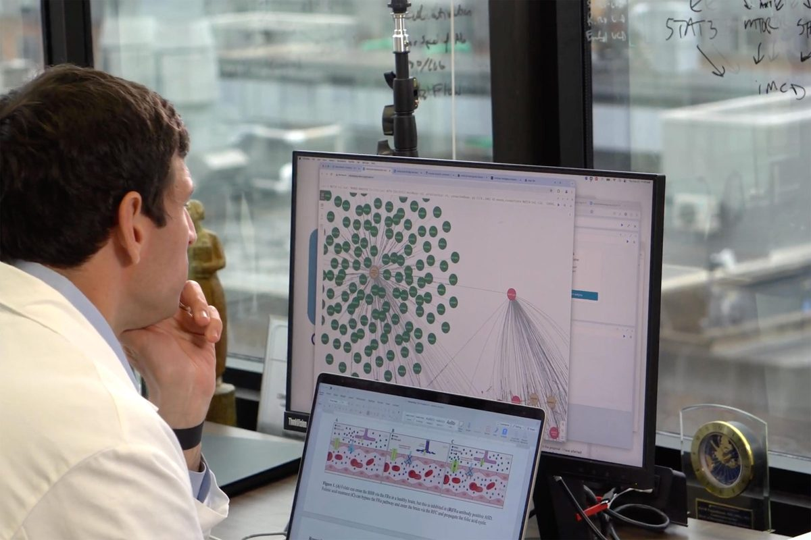

- Explain how ordinary record-keeping becomes a data trove, and why the owner of the record ends up owning the prediction.
- Describe what a knowledge graph is, and show how a path through one becomes a prediction.
- State "the record has a shape" in plain words, and find the same mechanism outside medicine.
- Explain external validation, and why a company's number and an outside number differ even when nobody lies.
- Say where a human can stand in an AI system and what each position costs, then run the five critical AI questions on a case you want to like and name the costs anyway.
The question, and the point of this chapter
In Chapter 2 we asked what stays human when machines do more of the human stuff. This chapter takes that question into the one place where the answer could actually kill someone: medicine.
Three things are true at once here. Medicine has spent fifteen years turning itself into data: charts, labs, insurance claims, and millions of published studies. AI is now using that data to find treatments for diseases no company would ever fund research on, with drugs that already sit in pharmacies. And AI has gotten good enough at some medical tasks that serious people are arguing the doctor should get out of its way.
So the question for the week comes in three parts. What can a predictive AI system actually see, and what can it never see? Who owns the data it sees, and what does that buy them? And where should the human stand, and who decides?
The point of this chapter, in one sentence: a predictive AI can only find what its data already holds, so the wins come from the thick parts of the record, the failures from the thin parts, and whether to trust it comes down to who checked it and where the human stood.
The concepts: the trove, the graph, the gap, the check, and the gate
2.1 The data trove: how ordinary record-keeping becomes an AI asset
Let's start with something that isn't AI at all: a record. This could be a hospital chart, a bank ledger, a store's receipts, a hiring file. For most of history, records were kept so someone could look something up later. Then two things happened. The records went digital, so they could be copied and combined. And then all of those records were turned into training data.
A data trove is a collection of records large enough, and consistent enough, to train an AI model on. Data accumulates over time, one transaction at a time, as the side effect of doing ordinary work. That's the part people miss. The most valuable AI assets in the world were not collected for AI. They were collected for billing, for compliance, for looking things up, and they became AI assets when someone noticed how big they had gotten.
Here's the business consequence, and it's the one this chapter turns on. At least right now, whoever holds the data trove gets to build the AI model, and the AI model is usually better the bigger the trove. So the owner of the record ends up owning the prediction, and every new record added by someone else makes the owner's position stronger.
Economists call that a moat: an advantage competitors can't easily cross. A company with better AI and no trove loses to a company with a big trove and ordinary AI. Notice who did the work of building it: usually not the owner. The nurses, the clerks, the customers, the patients.
Medicine has two of these troves, and the difference between them runs through the whole chapter. The first is the chart. In 2009 the federal government began paying hospitals to switch from paper to electronic records, and over the next fifteen years American medicine typed itself into software, most of it sold by a handful of private software companies. That trove is enormous, and it is owned. The second is the published research literature: millions of studies, written over decades by people who never met, and owned by nobody. This chapter's case runs on the second one.
A pile of records, collected for some other purpose, that has grown big enough to train a model. What people get wrong: they think the AI is the asset. The trove is the asset; the model is what you can build once you have it. And the trove was usually typed in by people who don't own it, which is why the first question about any impressive medical AI is not "how good is the model?" but "whose record is it learning from, and who else can get one?"
2.2 The knowledge graph: how a path becomes a prediction
A data trove on its own is just a pile. To predict anything from it, a system has to organize it, and the AI system in this chapter's case organizes it the way more and more systems do: as a knowledge graph. A knowledge graph is a way of storing information as connections instead of rows. Picture a map of dots and lines. Each dot is a thing the system knows about: a song, a drug, a customer, a disease. Each line is a specific, labeled relationship between two of them that someone recorded: made by, bought with, blocks, treats. A spreadsheet stores facts one row at a time and leaves the relationships to you. A knowledge graph stores the relationships themselves, which means a computer can follow them, hop to hop, the way you follow a trail of names on a whiteboard.
Take Spotify. The dots are songs, artists, genres, moods, playlists, and listeners. The lines are things that got logged: this artist made this song, this song sits in this genre, this listener saved this playlist, these two songs get played back to back. Nobody wrote a rule that says "people who like this band will like that one." The system finds paths. Your favorite song connects to a playlist, that playlist connects to a second song, and the second song comes back to you as a recommendation. Two hops through the record, and the record was built by millions of people pressing play.
Spotify will show you a version of this. Open a song, scroll to the bottom, tap SongDNA, then Explore. You get dots and lines: the song, the people who made it, what they are connected to. That is the same object this chapter is about, built from what the record happened to log.
In the context of healthcare, the dots are things science knows about: drugs, diseases, genes, proteins, symptoms, biological pathways. The lines are relationships someone documented in a paper. This drug blocks this protein. This protein drives this disease. This gene sits in this pathway. Every line was somebody's research, published one study at a time, mostly by people who never spoke to each other and were not working on the same problem. A predictive system works that graph the same way Spotify works yours: it looks for indirect paths. If drug A connects to protein B, and B connects to disease C, then maybe A helps C, even though no paper ever said so. Here's one such path, and it's a real one.
Table 1 · The path in the figure, step by step. Each solid line is a documented relationship from real research. The last row is the dashed arc: the prediction, which no research ever made.
| Hop | The documented relationship |
|---|---|
| 1 Sirolimus (a drug) → mTOR | Sirolimus blocks a protein called mTOR. Known since the 1990s; it's why the drug prevents transplant rejection. |
| 2 mTOR → overactive immune cells | mTOR helps switch on certain immune cells. Documented in immunology research. |
| 3 overactive immune cells → Castleman disease | In one form of Castleman disease, those immune cells are running out of control. This line was drawn by a patient you'll meet in section 3. |
| arc Sirolimus → Castleman disease | No research. No paper. No line. But three lines make a path, and the path is the prediction. |
Notice that the AI isn't actually discovering anything. It's finding relationships that people already published and scoring how well they line up, across millions of papers no person could read. That's the machine, and that's all of it. The humans do the rest: they read the score, pull the papers behind the path, decide whether the biology holds, and decide whether it's worth a scientist's time. A path is not a finding. It's a place to look, and the value of the ranking is that it puts the good places to look at the top of a list tens of millions of rows long.
Information stored as labeled connections instead of rows, so a system can follow relationships hop to hop and find paths nobody wrote down. What people get wrong: they picture the AI discovering something new. It didn't. Every line in the graph was already published by somebody. The only thing the machine adds is noticing that three separate findings line up, which is a real contribution and a smaller one than the headline suggests.
2.3 The record has a shape: the research gap becomes the prediction gap
An AI model trained on a data trove can only know what the trove contains. That sounds obvious. Its consequence isn't. Every record is thick in some places and thin in others, and the thickness follows money and attention, not truth. For example, a hospital chart is thick wherever care was delivered and billed; it is thin wherever people never made it to the hospital. The published medical literature is thick around common diseases in rich countries, and thin around rare diseases nobody funds. This means the data trove has a shape, and the AI model inherits it.
If that sounds familiar, it should. It's the long tail, the same shape as the sales chart in any business class, and you'll see it again in Chapter 7, where the tail is rare driving situations instead of rare diseases. A few things happen constantly and get most of the attention; a very large number of things happen rarely and get almost none. Sort every known disease by how much research exists on it and you get the picture below. A few hundred common diseases in wealthy countries make up the head. Thousands of rare diseases make up the tail, and the tail is where every disease in this chapter's case lives.
Here's the catch. Remember how the graph makes a prediction: it finds paths, routes along the recorded lines from one dot to another, like the pink two-hop route in the Spotify figure or the drug-to-protein-to-disease route in Table 1. No path, no prediction. Look back at the thickness of the lines in the medical figure: thousands of studies behind the first hop, a few dozen behind the last. Now ask which diseases have the most lines, and the thickest ones, to build paths from. The ones in the head. A heavily studied disease is a dense hub with lines running everywhere. A disease out in the tail, studied by a handful of scientists, is a dot with almost nothing attached. Few lines means few paths. Few paths means weak scores, for every drug, no matter how well one of them might actually work. The system doesn't know the drug won't help. It knows that nothing connects, because nobody ever looked. In this sense, the research gap becomes a prediction gap.
Let's put numbers on it, made up but realistic. Say a drug scores 5 out of 100 against migraine, a disease with 12,000 published studies. That low score probably means what it looks like: no. Migraine is a dense hub, so if a path from that drug existed, the system had thousands of lines to find it with, and it didn't.
Now the same drug scores 5 out of 100 against ROHHAD syndrome, an ultra-rare childhood disorder with about a hundred documented cases worldwide and nine published studies. That 5 means something completely different. There are almost no lines to build a path from, so the drug would score low against ROHHAD even if it were a cure. The system isn't saying "no." It's saying "I have nothing to go on," and it says that in exactly the same number.
That's the problem. Two identical scores, one meaning "this doesn't work" and one meaning "nobody has looked," and nothing about the number tells you which one you're holding. The only way to know is to look at how much research sits behind it, which is why the evidence column in Wednesday's lab matters more than the score.
Every drug scores near zero against ROHHAD, and not one of those scores is a judgment about any drug. The system is reporting the absence of research in the confident voice of a number. That is an invisible failure, and it is the failure to fear in this chapter, because nobody ever sees it happen.
An AI model inherits the data trove's head and tail, and when predicting, the tail comes out as confident low scores, not as "unknown." What people get wrong: they read a low score as "the drug doesn't work" or "the patient is low-risk." Sometimes it means that. But it could also mean "no one has really looked yet," and a system that reports both with the same number is hiding its own blind spot inside its output. You'll meet this again in hiring data in Chapter 6, where the thin records are people.
2.4 External validation: who checked, and on whose data
Every model comes with a number: how accurate it is, how often it catches the thing it's looking for. The question is who measured it, on what data. When the company that built the model measures it on the data it trained on, you get the company's number. When someone else runs the model on their own data and publishes what happened, you get the outside number. The second is called external validation, and in medicine it is the difference between a claim and a finding.
Here's why the two numbers drift apart, even with nobody lying. A model learns the patterns in one data trove. A different hospital has different patients, different equipment, different habits about what gets typed into the chart. Patterns that were real in the training data are weaker or absent in the new one, so accuracy drops. That's called distribution shift, and it happens to every model that leaves home. There's also a quieter reason: a company chooses which number to report, and it will not choose the one from its worst site.
Let's make it concrete with round numbers. A vendor reports that its alert catches 80 percent of cases. A hospital tests it on a year of its own patients and finds it catches 35 percent, while firing on one admission in five. Both numbers can be honest. The first was measured where the model was born, the second where it has to work. And if the model is proprietary, meaning the hospital isn't allowed to see inside it, the outside number is the only one anyone can check. The people who run external validations have a phrase for what happens without them: confidential performance claims that never met a reviewer.
Notice that both kinds of failure are in that example. The loud one: an alert firing on one admission in five, so nurses learn to click past it. The silent one: the real cases the alert never caught, which triggered nothing and generated no report at all.
Someone outside the company runs the model on their own data and publishes the result. What people get wrong: they assume the number on the product page was measured the way a trial is. It usually wasn't. The company's number tells you the best the model did somewhere; the outside number tells you what it does here. If nobody outside has published one, the honest accuracy of the model is "unknown," however confident the brochure.
This is not a medical problem. It's a problem for any AI model that predicts something about people, and the outside check is the only defense. Police departments buy facial recognition systems on the vendor's accuracy number; when researchers at MIT tested three commercial systems in 2018 on their own set of faces, error rates for darker-skinned women ran above 30 percent against under 1 percent for lighter-skinned men, and by 2020 people were being wrongly arrested on matches nobody had checked. Banks buy credit models the same way, and employers buy résumé screeners the same way. In every case the question is the same: what does it do on our data, and who has looked?
2.5 Where is the human? Should doctors stay in, on, or out of the loop?
AI systems today put people to work in one of three ways. Businesses use all three constantly, and the three words are worth learning now because they come up in every chapter after this one.
- A human in the loop makes the final call; the AI only proposes, and nothing happens until a person says yes. In a hospital: the AI drafts a diagnosis, and a doctor reads it and decides.
- A human on the loop watches the AI act and can step in; the AI is doing the work, and the person is supervising it. In a hospital: the AI reads every mammogram and flags the suspicious ones, and a radiologist reviews only what it flagged.
- A human out of the loop isn't there in the moment at all; someone set the system up, tested it, and left. In a hospital: a patient tells a chatbot their symptoms at 2 a.m. and gets an answer with no clinician involved.
Each position has a price. In the loop is slow and expensive, because a person touches every decision. Out of the loop is fast and cheap, and when it goes wrong there is nobody in the room.
This book has been treating "keep a human in the loop" as a good thing to do, and for most AI systems it is. In medicine, though, that assumption may be changing, and the argument for changing it comes from serious people.
In August 2026, four authors published a viewpoint in the Journal of the American Medical Association arguing that doctors should get out of the loop for a specific set of tasks. Ezekiel Emanuel, an oncologist and bioethicist at Penn, wrote it with Abe Baker-Butler, a research fellow, and two investors, Neal Khosla, who runs the AI health company Curai, and Vinod Khosla, who funds it. Their claim is narrow and specific.
For the cognitive work of medicine, meaning taking a history, making a diagnosis, choosing tests, recommending treatment, and managing chronic disease, they argue that AI working alone will soon outperform not only doctors, but doctors working with AI. Here's how that would play out. You feel unwell and open an app. The AI asks you what's wrong, follows up the way a doctor would, decides which blood test you need, reads the result, tells you what you have and what to take, and checks in next week to adjust the dose. No doctor reads the transcript. On the authors' evidence, that version of the visit would be more accurate than the one where a doctor reviews the AI's work, because the doctor is the step where errors get added.
Their strongest evidence is a 2024 study of diagnostic reasoning on real patient cases, which the JAMA piece reports like this:
Table 3 · Who diagnosed best? Median diagnostic reasoning scores on the same real patient cases, from the 2024 study the JAMA authors lean on.
| Who made the call | Score | Where the human stood |
|---|---|---|
| Doctors alone | 74 percent | No AI in the room |
| Doctors using the AI | 76 percent | Human in the loop: the AI proposed, the doctor decided |
| The AI alone | about 90 percent | Human out of the loop |
Read the middle row twice. Adding the doctor didn't just fail to help. It dragged a 90 down to a 76.
So the regulators, they say, should stop requiring a human in the loop by default. Regulators here means the agencies that decide how medicine is allowed to run: the FDA, which clears medical AI the way it clears a device; the state medical boards, which decide who is licensed to diagnose and prescribe; and Medicare and the insurers, which decide what gets paid for and today almost always require a licensed clinician to sign. Every one of those currently assumes a human makes the final call. The JAMA authors want that assumption dropped for the five tasks above, because on their reading the human is making the answer worse.
Why would adding a doctor make the answer worse? Two habits, and both are ours. Automation bias is trusting a reliable-seeming system so much that you stop checking it. Algorithmic aversion is the opposite: overriding the system's answer with your own even when it's more likely to be right. And there's a third, which the hospital alert in section 2.4 showed you: alert fatigue, when a system fires so often that the human in the loop learns to click past it, and becomes a human out of the loop with extra steps. On the JAMA view, the doctor isn't the safeguard. The doctor is the noise.
Of course, in this book we need to think critically here. Who is saying this, and what do they gain? Two of the four JAMA authors make money if hospitals buy autonomous AI, and to their credit they disclosed it. The American Medical Association, which represents doctors, answered that most of the evidence cited in the article comes from simulations, not from blinded trials in real hospitals. Robert Wachter, who runs the department of medicine at UCSF and is himself an adviser to Curai, wrote the most careful reply and agreed with the premise: given a clean set of facts, the AI often wins. Then he named two problems. First, garbage in, garbage out. The 90 percent was scored on cases a doctor had already boiled down to the facts that matter. In an Oxford study he cites, when ordinary people described the same cases in their own words, the AI made the wrong call about two-thirds of the time. The doctor's job of figuring out which facts matter wasn't in the test. Second, the doorman fallacy: even if a machine does the diagnosis better, the person does a dozen other things that only look unimportant until you remove them.
Notice that neither of those is the long tail. The long tail is about a thin record. Wachter's point is that the record can be fine and the input can still be a mess, because a scared patient at 2 a.m. does not describe their symptoms the way a chart does. Different problem, same lesson: the number was measured under conditions that aren't the ones you'll use it in.
So who's right? Here's what happened when people ran the experiment the AMA's way, in real hospitals, randomized. Three trials, three answers.
Table 4 · Three hospital trials, three answers to "where should the doctor be?" All three are randomized controlled trials, the design that lets you say a result was caused by the change and not by chance.
| The trial | Where they put the doctor | What happened |
|---|---|---|
| Mammograms, Sweden. The MASAI trial, 105,000 women, The Lancet Digital Health, February 2025. | Moved from in the loop to on the loop. Instead of two radiologists reading every scan, an AI sorted scans by risk and one radiologist read the low-risk ones, stepping in only where the AI flagged. | 29 percent more cancers found, no more false alarms, 44 percent less reading work. Fewer humans, better result. |
| Fetal brain ultrasound, China. 1,584 high-risk pregnancies at five hospitals, The Lancet Digital Health, September 2026. | In the loop, two ways. Sonographers scanned with an AI that marks suspicious shapes on screen. The trial compared having it beside them live during the scan versus as a second look afterward. | About nine points more real problems caught, no more false alarms, and it helped most as a live co-pilot. The human's position had a measurable price. |
| Routine pregnancy scans, England. The PROMETHEUS trial, NEJM AI, 2025. | In the loop, with help. Sonographers kept the final call and used an AI that measured the fetus automatically while they scanned. | Accuracy didn't change in a way the trial could confirm. Scans took eleven minutes instead of twenty, and the sonographers reported far less strain. The gain was a less exhausted human. |
Notice what the table does to the fight. The JAMA authors say the human is the noise. The AMA says the human is the safeguard. The trials say: it depends on the task, and you have to measure it.
So the honest answer to "should doctors stay in, on, or out of the loop?" is that it isn't one answer. It's a setting you choose for each task, and each setting has a cost that a trial can put a number on. For low-risk mammograms, moving the radiologist on the loop caught more cancers with less work. For a fetal brain scan, keeping the sonographer in the loop with the AI beside her worked better than the AI checking afterward. Anyone who tells you the answer for all of medicine at once has skipped the trials.
The point in an AI system where a person decides whether an output goes forward. In the loop, on the loop, out of the loop: each is a design choice with a price in speed, money, and safety. What people get wrong: they assume the human is always the safety feature. Sometimes the human is the safeguard. Sometimes the human is the noise. Sometimes the human is technically there and has stopped looking. Which one is an empirical question, task by task, and the honest answer to "should the doctor step out?" is "for which task, tested how, and who answers when it's wrong?"
1. A grocery chain that has kept every loyalty-card receipt since 2010 starts selling "demand forecasts" to its suppliers.
The trove. Records collected for one purpose (discounts) became an AI asset when they got big enough, and the chain, not the shoppers who built it, owns the prediction.
2. A hiring model scores an unusual career path low against past successful hires.
The shape of the record. Few past examples, few paths, weak score, and nothing to do with the candidate. Chapter 6 lives here.
3. A bank's fraud system stops texting you to confirm a suspicious charge and starts blocking the card on its own.
Store, predict, act. The same model moved from a prediction that waited for you to an action that already happened. Where the human stands just changed without anyone announcing it.
4. A software vendor's brochure says its model is "94 percent accurate." No hospital has published a test of it.
External validation, and the trap item. 94 is the company's number, measured somewhere. Until an outside number exists, the honest accuracy is "unknown," however confident the brochure.
5. A radiologist signs off on a scan the AI flagged as normal without opening it, at the end of a twelve-hour shift.
The human gate. In the loop on paper, out of it in practice. That's automation bias, and it's the failure the JAMA authors would say proves their point and the AMA would say proves theirs.
The case: Every Cure, and the drug that was already there
Watch this first. It runs about fourteen minutes, it is made by Penn Medicine, and it is the case for this chapter. Two people in it matter: Dr. David Fajgenbaum, who nearly died of a rare disease and found his own treatment, and Joseph, a patient whose doctors had run out of options.
Background A doctor who cured himself, and the search that followed
Here's what happened, in plain order. In his third year of medical school at Penn, Fajgenbaum's organs began shutting down. The diagnosis was Castleman disease, a rare disorder in which the immune system attacks the body. It nearly killed him five times. The approved treatments failed. So he studied his own disease, found an overactive signal in his own blood, and found a decades-old drug, sirolimus, given to organ transplant patients to stop the body rejecting the new organ, that happens to switch that signal off. Nobody had ever used it for Castleman disease. He has been in remission for more than eleven years on a drug that sat in every pharmacy the whole time he was dying.
That's the origin. Now the part that makes it a business case. Fajgenbaum's question afterward was: how many other treatments are already on the shelf? There are about 4,000 approved drugs and more than 18,000 known diseases. Drug repurposing is taking a drug that is already approved and on the market for one disease and using it to treat a different disease it was never designed for. It happens more than you'd think. Aspirin was a painkiller before it was a heart drug, and the diabetes drug in Ozempic became a weight-loss drug. Repurposing is cheap and fast, because the expensive part, proving the drug is safe in humans, has already been done. It is also commercially neglected, for a reason worth saying out loud. A new drug earns back its billion-dollar development cost through a patent. An old, off-patent drug has no patent left, so a company that spent ten million dollars proving a generic pill treats a rare disease could not stop rivals selling that pill the next day. The cure might be in every pharmacy, and nobody is paid to notice. That is why this is a nonprofit and not a startup.
In 2022 Fajgenbaum co-founded Every Cure. In February 2024 the federal agency ARPA-H gave it a three-year, $48.3 million contract to build a platform called MATRIX. MATRIX is the AI system in this case, and it's the knowledge graph from section 2.2 at full size: about 8.9 million dots and 33 million lines assembled from public biomedical databases, with a model on top that scores every approved drug against every known disease and hands the top matches to physicians. TIME named it one of the best inventions of 2025. Fajgenbaum's own description in the video is the one to remember: people cannot read billions of research articles, AI can, so they build a map of everything known about every drug, disease, gene, and protein, train the model on treatments that already work, and then humans decide what to focus on. In February 2026 ARPA-H funded a second phase, up to $76 million, to take twenty top matches into the lab and ten into clinical trials.
Then Joseph. He was diagnosed with POEMS syndrome, a rare blood disorder. He lost forty pounds in weeks. His own oncology team's treatment did not work. A stem cell transplant was planned, then called off because he was too sick, and his doctor raised hospice. His partner Tara emailed Fajgenbaum on a Friday afternoon. Fajgenbaum's team ran the problem through the AI system: POEMS is rare, but it resembles Castleman disease and multiple myeloma, so drugs used in myeloma had paths into it. Fajgenbaum had already thought of three chemotherapy drugs, and the scoring ranked those same three highly. Then came the hard part, which he says plainly in the video. Chemotherapy is the last thing you give a person who is barely surviving, because it could kill him. They gave it. Joseph responded within two weeks, left the intensive care unit, walked again, recovered kidney function, got the transplant after all, and reached full remission.
That is a story almost impossible not to love. Which is exactly why we run the five questions on it.

The five critical AI questions, run on this case:
What this AI is, and how it works Question 1: what is the AI system, and what does it do?
MATRIX, a predictive AI system built on a biomedical knowledge graph. It does not write, chat, or diagnose. It scores and ranks. Let's run the AI systems model on it:
- Data: about seventy public biomedical databases, assembled from decades of published research, plus lab data Every Cure generates itself. Everything the literature contains, and nothing it doesn't.
- Model: the graph, roughly 8.9 million dots and 33 million lines, plus machine learning trained on treatments already known to work, so the system learns what a real drug-disease connection tends to look like.
- Output: a score for tens of millions of drug-disease pairs, sorted into a ranked list.
- Feedback loop: a match that gets investigated and published becomes a new line in the graph. A match nobody investigates draws nothing, so the system learns most from the diseases people already study.
- Humans: Fajgenbaum and his team, who had their own hypothesis for Joseph before the ranking confirmed it; an independent scientific council; the treating oncologists who had to give the order; and Joseph, who had to consent to a drug that might kill him.
Who benefits, and who doesn't Question 2: why does it exist, and who benefits?
It exists because the market does not pay anyone to run this search. Patients with rare diseases benefit first, and they have no other option. Hospitals and insurers benefit, because a repurposed generic costs a few dollars a dose instead of thousands. Every Cure benefits, because a nonprofit with a federal contract and a story like Joseph's will keep getting funded. Penn benefits; the video is Penn's.
Now the part the same business logic implies. The missing patent that makes repurposing cheap also means nobody profits from proving it works. There is no company to fund the confirmatory trial, to chase a label change, or to argue with an insurer who declines to cover a drug used off-label. The economics that make the search possible are the same economics that make the proof hard to finish.
Who doesn't benefit: patients with diseases so rarely studied that the graph has almost nothing on them, which is the gap in section 2.3 with a face on it; and drug companies, who gain nothing from a generic pill finding a second use, which is why none of them built this.
When it fails, who finds out Question 3: what happens when it fails, and who finds out?
Two failures, and the video shows you neither.
The first is the invisible failure from section 2.3. A drug that would have worked scores near zero because the disease is a thin dot, so nobody investigates, nobody publishes, and nobody ever knows there was anything to know. Who finds out? Nobody, ever, unless a patient does what Fajgenbaum did from a hospital bed.
The second is the one survivorship hides. We heard about Joseph. We did not hear about the patients where a high-scoring drug did nothing, or where chemotherapy given to someone barely surviving hastened the end. Those cases exist, they rarely get published, and without a denominator we cannot tell a good system from a lucky one. Notice also that Fajgenbaum had already thought of those three drugs himself. The AI agreed with him. That is worth something, and it is not the same as the AI finding a cure alone, which is how the story usually gets retold.
Business implications What this means for anyone deploying a predictive system on a record
MATRIX is a nonprofit's tool, but the lesson is for any organization pointing a predictive model at its own records: an insurer, a hospital, a bank, a university. Three things carry over. First, the model can only find what the record holds, so before buying one, ask what your record is thin on, because that's where it will be confidently wrong. Second, a score is a claim about the record, not a verdict about the person, and the design that keeps a human as the gate is cheaper than the lawsuit that follows treating a score as a decision. Third, ask who validated it and on whose data, because a vendor's accuracy number came from the vendor's data, and section 2.4 is what happens when you skip that step. The costs are real: an outside validation takes months, a human gate slows every decision, and a thin-data audit may tell you the tool isn't ready. The alternative is finding out the way the hospital alert did.
Societal implications Question 4: who's saying that, and how would we know?
Run it on everyone in the video, gently but fully. Fajgenbaum is a patient, a physician, and the founder of the nonprofit. Penn Medicine made the film and benefits from being the place where this happens. Joseph is telling the truth about his own life, and a single recovery is a story, not evidence. Every person in it gains if the story is believed, and none of that makes it false.
So how would we know? The same way medicine knows anything: trials. Phase two of the ARPA-H contract is exactly that test, ten matches into clinical trials, and it is a good kind of claim because it will produce a checkable result. Until then the honest sentence is: this system produced candidates, several of which are in trials, and one patient recovered after a match it ranked highly. Watch what happens when that sentence gets shortened.
How to keep it beneficial Question 5: keep it, fix it, or drop it, and what does that cost?
- Keep it: the graph, the ranking, and the human gate between prediction and patient. The search is cheap, the drugs are already safe in humans, and the alternative for these patients is nothing. The cost is that the record's shape decides who benefits, so the diseases with the most research keep winning, and Every Cure keeps choosing roughly ten diseases out of thousands. That is a rationing decision made by a small group with a federal contract, and no one elected them.
- Fix it: publish the misses, not just the saves, so a denominator exists. Fund trials for the top matches, which nobody profits from running. Fill the thin records with cheap lab data so rare diseases stop scoring zero by default. Each fix costs money that no business model supplies, which is the same reason the problem exists.
- Drop it: go back to finding repurposed cures by accident. The cost has a name now, and it is Joseph, plus everyone in the phase-two pipeline. Almost nobody argues for this, and that tells you something: "AI is all hype" does not survive contact with a patient who is alive.
Three more costs worth naming, because a case you want to like is where critical habits go to die. A high score can become cover for a risky decision, and chemotherapy for a man hours from life support was a risky decision that happened to work. Desperate families will find these scores and arrive asking for the drug, and a clinician will be arguing against a number. And the graph inherits the literature's flaws, including the fact that most negative results were never written down at all.
Keep the graph, the ranking, and the human gate between prediction and patient. Fix what the record can't see: publish the misses so a denominator exists, fund the trials nobody profits from, and fill thin records with cheap lab data so rare diseases stop scoring zero by default. Drop the headline; a candidate is not a cure until a trial says so. The cost is money no business model supplies, which is the same reason the problem exists, and it's a public choice about which diseases count.
Thinking critically The five critical AI questions, on this case, by you
- Q1 · What is it, and what does it do? Every Cure's system scores a claim about the record, not a verdict about a patient. Pick another predictive system from your own life (a credit score, a school's early-warning flag, a fitness app) and say what its score is actually a claim about, and what people treat it as.
- Q2 · Why does it exist, and who benefits? Drug companies didn't build this, and the chapter says why. Name who benefits from a generic drug finding a second use, who doesn't, and why the economics that make the search possible make the proof hard to finish.
- Q3 · What happens when it fails, and who finds out? The gap in section 2.3 is a failure nobody sees: the cure that was never looked for. Name one disease or group you'd expect the graph to be thin on, say why, and say who, if anyone, would ever notice the miss.
- Q4 · Who's saying that, and how would we know? "AI found a cure" is the headline; the chapter says AI found a candidate that a doctor read and a trial has to prove. Take the film's strongest moment and run this question on it: who's telling it, what do they gain, and what would you need to see, not hear, to believe it?
- Q5 · Keep it, fix it, or drop it, and what does that cost? The chapter's author says yes to this one, with things to watch. Write your own keep-fix-drop, and price it: what does each of your conditions cost, in time, money, or patients not reached?
The cure existed. The knowledge to find it existed. What was missing was anyone connecting them, and connecting them at the scale of millions of papers is the thing the machine actually does. That is the win, stated accurately. The limit is in the same sentence: it can only connect what somebody already wrote down, the saves get published and the misses mostly don't, and a doctor still had to decide whether to give a dying man chemotherapy. (As of September 16, 2026. Phase two's trials will move this.)
Decide: yes to this one, and here is what I'd watch
Let's say the plain thing first, because this book doesn't say it often: this is a good and beneficial use of AI, and of data. A machine read millions of studies no person could read, found paths no person had noticed, and a man who was being moved to hospice is alive and in remission. The data it ran on was public, built by scientists and owned by nobody. The organization is a nonprofit that publishes its graph, gives its tools away, and sends every match through human review before it goes near a patient. If we can't say yes to this, we can't say yes to anything.
And the yes doesn't cancel the rest. The gap in the record is still real, the misses still go unpublished, the graph still tilts toward what got funded, and "AI found a cure" still does more work than the evidence supports. The mature position this course is after isn't "AI in medicine: good or bad." It is: yes to this one, clearly, and here is the specific thing I'd watch. Practice saying both halves in that order. You'll need the habit by Chapter 6, where the same mechanism runs on résumés and the people at the thin end of the record are job applicants.
4.1 Four takeaways
Read every score twice
Once for what it says, once for what the record behind it could have said, and a third time if the only number you have is the company's. A low score on a thin record is "unknown," not "no." From now on, when a predictive system hands you a number, the trained reflex is to ask how thick the record was where that number came from.
Ask who checked
Every model comes with a number and almost none come with an outside test. An outside test is what checking looks like, and it takes real time and money from someone who isn't selling the model. Before you trust a model anyone is selling, ask whether someone outside the company has run it on their own data and published the result. If nobody has, the honest accuracy is unknown.
The market decides what gets looked for
Nobody hid Fajgenbaum's cure. Nobody was paid to find it. The most important thing an AI system can change in medicine may not be what it finds, but what finally gets looked for, and who pays for the looking. When you meet the next "AI will cure X" headline, ask who funded the search, which diseases it skipped, and who is paying to prove it.
The graph favors what got funded, at both ends
This bias is easy to miss because it looks like success. A drug that has been studied for decades has thousands of lines into the graph, so it shows up in paths to more diseases, and graph models have a well-known tendency to reward the best-connected dots. Every Cure also trains its model on treatments already known to work, which teaches it what a match looks like using the diseases that already have drugs. Neither is a flaw in the code. Both mean the search tilts toward the drugs and the diseases research has already invested in. So when a repurposing system keeps finding new uses for old blockbusters, ask whether that's the biology or the bibliography. The record has a shape, and its shape favors what got funded, at both ends of the path.
Key terms
A pile of records, collected for some other purpose, that has grown big enough to train a model. The asset behind every impressive AI, and usually typed in by people who don't own it.
An advantage competitors can't easily cross. Here: a trove that gets better with every record other people add, which makes the owner harder to leave.
Information stored as labeled connections instead of rows, so a system can follow relationships hop to hop and find paths nobody wrote down. MATRIX's holds about 8.9 million dots and 33 million lines.
AI that estimates and ranks rather than generates. Runs medicine, lending, and logistics, and predates the chatbot era. Chapter 1's first kind.
A few things get most of the attention and a very large number of things get almost none. Sort diseases by research and you get it: a head of common, well-funded diseases and a tail of thousands with almost no studies each.
A model inherits the record's thick and thin places, and the thin places come out as confident low scores. In the literature: the research gap becomes the prediction gap.
A failure no one can observe: the cure never surfaced, the patient the alert never flagged. The third critical AI question exists for exactly this.
Using an approved drug to treat a disease it wasn't approved for. Cheap, fast, already safe in humans, and commercially neglected: no patent, no profit, nobody paid to look.
Someone outside the company runs the model on their own data and publishes the result. Without one, a model's accuracy is whatever the company says it is.
Why a model's accuracy drops when it leaves the data it was trained on: different patients, equipment, and habits. One honest reason two numbers differ with nobody lying.
What humans do when a system fires too often: stop looking. A human in the loop who has learned to click past the alert is a human out of the loop with extra steps.
Three places a person can stand in an AI system: making the final call, watching and able to step in, or absent in the moment. Each has a price.
The point where a person decides whether an AI output goes forward. Sometimes the safeguard, sometimes the noise, sometimes technically there and no longer looking.
Trusting a reliable-seeming system so much that you stop checking it. The radiologist who signs off on the "normal" flag without opening the scan.
The opposite habit: overriding a system's answer with your own even when the system is more likely to be right. The JAMA authors' explanation for 76 beating 90.
An experiment that randomly assigns who gets the change, so a difference can be credited to the change and not to chance. Medicine's gold standard, and the design behind all three trials in Table 4.
Sources & verification
Verified 16 September 2026. Where a claim is an organization's account of itself, it says so. Two items are flagged below as still needing a check.
- The case: Joseph and Every Cure
- Penn Medicine's film (linked and embedded) is the source for David Fajgenbaum's illness and remission, Joseph's diagnosis of POEMS syndrome, the failed treatment, the cancelled stem cell transplant, the hospice conversation, Tara's email, the three multiple myeloma chemotherapy drugs Fajgenbaum considered and the model also scored highly, the decision to treat, and Joseph's recovery, transplant and remission. Joseph's story is told in his own words on Penn's public channel and is used here as he told it. Fajgenbaum's description of the biomedical knowledge graph and of training on known treatments is his own, from the same film, paraphrased.
- The numbers
- The 4,000 approved drugs and the eleven-plus years of remission are Fajgenbaum's, from the film. The 18,000 known diseases and roughly 9,000 without an approved treatment are Every Cure's published counts. Every Cure's founding (2022), the $48.3 million ARPA-H contract of February 2024 and the up-to-$76 million phase two of February 2026 (twenty preclinical programs, ten clinical trials) are from Every Cure's own announcements (linked) and ARPA-H's releases; these are the organization's claims about itself and are presented as such. Graph scale (about 8.9 million nodes, 33 million relationships, five integrated source graphs, 58 node categories, 76 relationship types) is from Every Cure's public MATRIX data dashboard, v0.15.x releases, 2026; these numbers change between releases. MATRIX's inclusion in TIME's Best Inventions of 2025 is from TIME's published list.
- How it fails (2.4)
- The hospital alert example uses round, illustrative numbers, and the distribution-shift figure's 0.84 and 0.64 are simulated. Facial recognition: Buolamwini and Gebru, "Gender Shades," Proceedings of Machine Learning Research, 2018, with error rates up to 34.7 percent for darker-skinned women against 0.8 percent for lighter-skinned men across three commercial systems. Wrongful arrests on facial recognition matches, including Robert Williams in Detroit in 2020, as reported by the ACLU of Michigan and the New York Times.
- The human in the loop (2.5)
- Emanuel, Baker-Butler, Khosla and Khosla, JAMA, August 2026 (linked). The 74, 76 and 90 percent figures are from Goh et al., JAMA Network Open, October 2024 (linked), as summarized in Robert Wachter's August 27, 2026 reply (linked), which is also the source for the Oxford study description and the doorman fallacy; Wachter's adviser role at Curai is his own disclosure. The AMA response is as reported by Fierce Healthcare and Wired, August 2026.
- Table 4: the trials
- MASAI: Hernström et al., The Lancet Digital Health, February 2025. The fetal-ultrasound trial: Lei et al., The Lancet Digital Health, September 2026. The Lancet page blocks automated access, so click-verify; the roughly nine-point sensitivity gain should be confirmed against the paper. PROMETHEUS: NEJM AI, 2025. Aspirin and Ozempic as repurposing examples are historical and stable.
- Still open
- The fourth takeaway's claim that graph models favor well-connected nodes (degree bias in link prediction) is a documented phenomenon in the graph-learning literature; that Every Cure trains on known treatments is Fajgenbaum's own description in the Penn video. The photo's licensed use is pending.
Found an error? Tell your instructor; corrections are course content.